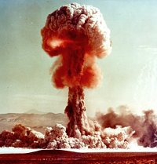

di Estec (leggi il suo comunicato)
“L’Europe ne se fera pas d’un coup, ni dans une construction d’ensemble: elle se fera par des réalisations concrètes créant d’abord une solidarité de fait”
"L’Europa non potrà farsi in una sola volta, né sarà costruita tutta insieme: essa sorgerà da realizzazioni concrete creando anzitutto una solidarietà di fatto”
Robert Schuman , 9 maggio 1950
Il 9 Maggio è Festa Nazionale negli Stati Uniti d’Europa fin dal 2034.
Dall'archivio storico politico
degli Stati Uniti d'Europa, Strasburgo, anno 2550: 
1946, 2 giugno: si tiene il contestato referendum nel Regno d’Italia per la scelta tra monarchia e repubblica. Il 13 Giugno il Re Umberto II di Savoia lascia l’Italia a seguito della vittoria dei repubblicani.
1948, 14 maggio: David Ben-Gurion dichiara la fondazione dello Stato d’Israele a seguito della risoluzione 181 dell’Assemblea generale delle Nazioni Unite del 29 novembre 1947. Lo Stato di Israele è riconosciuto immediatamente dagli Stati Uniti d’America e dall’Unione Sovietica. Il 15 maggio 1948 si forma una “grande armata” nella quale sono riuniti gli eserciti egiziano, giordano, iracheno, siriano e libanese, affiancati da un contingente dell'Arabia Saudita che dichiara guerra allo Stato di Israele.
1949: 3 aprile: La guerra
israeliana termina a luglio con la sconfitta della “grande armata” di aggressione
allo stato ebraico. 4 aprile: Nasce la NATO (North Atlantic Treaty Organisation). 4 maggio: in
una sciagura aerea perdono la vita tutti i giocatori della squadra di calcio
del Torino.
4 aprile: Nasce la NATO (North Atlantic Treaty Organisation). 4 maggio: in
una sciagura aerea perdono la vita tutti i giocatori della squadra di calcio
del Torino.
1952, 23 luglio: Nasce la CECA (Comunità europea del carbone e dell'acciaio) alla quale aderiscono Italia, Repubblica Federale di Germania, Francia, Belgio, Paesi Bassi e Lussemburgo.
1957, 25 marzo: Vengono firmati i Trattati di Roma che istituiscono la Comunità Economica europea (CEE) e l’EURATOM. 4 ottobre: l'URSS lancia il primo satellite artificiale della storia, lo Sputnik I ("compagno di viaggio"), pesante soli 83 Kg. Inizia l'era spaziale.
1961, 12 aprile: primo volo orbitale riuscito di un essere umano, il russo Yuri Gagarin, a bordo della capsula Vostok I ("Oriente"). 13 agosto: Viene innalzato il Muro di Berlino che divide in due la città separando la Germania ed il mondo in due blocchi contrapposti.
1962, 20 febbraio: John Glenn è il primo astronauta americano in orbita terrestre. 24 ottobre: scoppia la crisi dei missili nucleari tra Stati Uniti d’America e Unione Sovietica per i 42 ordigni atomici che il segretario del Partito Comunista Sovietico Nikita Kruscev ha fatto installare a Cuba. La crisi si risolve in cinque giorni, con la mediazione decisiva di Sua Santità Papa San Giovanni XXIII, dopo la decisione di Kruscev di smontare i missili e di riportarli indietro. 26 agosto: prima missione interplanetaria riuscita: la sonda americana Mariner 2 sorvola per prima il pianeta Venere da 34.800 Km di distanza.
1965, 14 luglio: la sonda americana Mariner 4 riesce per prima ad avvicinarsi al pianeta Marte, giungendo fino a circa 9850 km dalla sua superficie, e trasmettse una ventina di immagini della superficie che, sebbene non eccezionalmente nitide, esclusero definitivamente la possibilità di esistenza di qualche forma di vita sul pianeta rosso.
 1968, 3 gennaio: il Plenum
del partito comunista cecoslovacco, con un colpo di scena che stava covando da
qualche mese, costringe Antonin Novotny a cedere il suo mandato di segretario
generale al giovane Alexander Dubcek, esponente moderato del partito comunista
slovacco che dà avvio alla “Primavera di Praga” allo scopo di svecchiare
il regime comunista. La calda notte tra il 20 e il 21 agosto la “Primavera
di Praga” termina con l'intervento militare delle forze militari del Patto
di Varsavia nel territorio cecoslovacco, e Dubcek viene arrestato assieme ai
suoi più stretti collaboratori.
1968, 3 gennaio: il Plenum
del partito comunista cecoslovacco, con un colpo di scena che stava covando da
qualche mese, costringe Antonin Novotny a cedere il suo mandato di segretario
generale al giovane Alexander Dubcek, esponente moderato del partito comunista
slovacco che dà avvio alla “Primavera di Praga” allo scopo di svecchiare
il regime comunista. La calda notte tra il 20 e il 21 agosto la “Primavera
di Praga” termina con l'intervento militare delle forze militari del Patto
di Varsavia nel territorio cecoslovacco, e Dubcek viene arrestato assieme ai
suoi più stretti collaboratori.
1969, 20 luglio: la missione statunitense Apollo 11 porta allo sbarco del primo uomo sulla Luna, Neil Armstrong.
1973, 1 gennaio: Danimarca, Irlanda e Regno Unito entrano a far parte della CEE che comprende nove Stati. 13 giugno: la sonda statunitense Pioneer 10 compie il primo fly-by della storia di un gigante gassoso, Giove.
1974, 29 marzo: primo sorvolo del pianeta Mercurio da parte della sonda americana Mariner 10.
1975, 30 Aprile: termina la
guerra del Vietnam con il ritiro delle truppe americane. Anno Santo presieduto
da
Paolo VI.
1977: prima esplorazione della superficie marziana ad opera delle sonde americane Viking I e II.
1978, 6 agosto: improvvisa morte di Paolo VI. 16 Ottobre: viene eletto al soglio di Pietro il giovane cardinale Karol Wojtyla con il titolo di Giovanni Paolo II (Santo Patrono d’Europa dal 2063).

1979, 1 settembre: la sonda americana Pioneer 11 è la prima a raggiungere Saturno e a fotografarlo da vicino. Come la sua "sorella" Pioneer 10, essa porta con sé una placca dorata con inciso un messaggio per eventuali alieni che dovessero rintracciarla.
1981, 13 maggio: Sua Santità Papa San Giovanni Paolo II Magno scampa miracolosamente (il Papa dichiarerà che è stato salvato dalla Vergine Maria) ad un attentato da parte del terrorista turco Alì Agca in Piazza San Pietro a Roma.
1982, 1 gennaio: La Grecia diventa il decimo Stato della CEE.
1986, 1 gennaio: La Spagna ed il Portogallo entrano a far parte della CEE che comprende dodici Stati. 24 gennaio: la sonda americana Voyager 2 giunge alla minima distanza da Urano, inviando a terra spettacolose fotografie del pianeta e dei suoi anelli. 14 marzo: la sonda dell'Agenzia Spaziale Europea (ESA) Giotto centra la cometa di Halley e per prima invia sulla terra incredibili immagini di un nucleo cometario.
1989, 25 agosto: la sonda americana Voyager 2 sorvola il pianeta Nettuno e il suo colossale satellite Tritone. 9 novembre: dopo 28 anni cade finalmente il muro di Berlino. In breve tempo le dittature comuniste dell'Est europeo vanno giù come birilli.
1990, 2 ottobre: Riunificazione della Germania est ed ovest.
1991, 17 gennaio: inizia la Guerra del Golfo a seguito dell’invasione irachena del Kuwait da parte di Saddam Hussein che poi si ritira dalla nazione invasa. Giugno: la Slovenia dichiara la propria indipendenza dalla Federazione Jugoslava. Anche la Croazia dichiara l’indipendenza, ma questo porta ad una guerra con la minoranza serba conclusasi dopo qualche mese con odiosi e disumani episodi di “pulizia etnica”. 11 Dicembre: firma del Trattato di Maastricht sull’Unione Monetaria Europea. Si fissano le regole per la nascita di una moneta comune europea. 25 dicembre: dopo il fallimento del colpo di stato ordito dall'ala conservatrice del Partito Comunista Sovietico, si ha la dissoluzione dell’Unione Sovietica nella Federazione Russa ed in una Comunità di Stati Indipendenti.
1992, marzo:
dichiarazione di indipendenza della Bosnia-Erzegovina dalla  Federazione
Jugoslava. Con l’assedio di Sarajevo da parte dell’esercito federale
jugoslavo inizia un’atroce guerra fratricida.
Federazione
Jugoslava. Con l’assedio di Sarajevo da parte dell’esercito federale
jugoslavo inizia un’atroce guerra fratricida.
1993: Conclusione del processo di ratifica del Trattato di Maastricht. 1 novembre: nasce l’Unione Europea. Cadono tutte le barriere tra i paesi membri delle Comunità.
1995: L'Austria, la Finlandia e la Svezia diventano membri dell’Unione Europea che comprende quindici Stati. Al vertice europeo di Madrid si decide di adottare la moneta unica europea a partire dal 1 gennaio 1999. La moneta viene denominata Euro. Dicembre 1995: l’accordo di pace di Dayton, in Ohio (Stati Uniti d'America), mette fine alla guerra in Jugoslavia.
1997, 4 luglio: La sonda americana semovente Mars Pathfinder esplora il pianeta rosso, inviando a Terra le foto del sassoso suolo di Marte.
1998, 20 novembre: inizia la costruzione della International Space Station (ISS).
1999: Nasce l’Euro,
moneta dell’Unione Europea, che acquisisce corso legale, ed entrano in vigore
i tassi di cambio fissi tra le singole monete nazionali. 24 marzo:
scoppia la guerra del Kosovo tra le forze N.A.T.O. e la Repubblica Serba. La
guerra termina novanta giorni dopo con il ritiro delle forze serbe.
N.A.T.O. e la Repubblica Serba. La
guerra termina novanta giorni dopo con il ritiro delle forze serbe.
2000: Al vertice di Nizza viene firmata la Carta dei diritti fondamentali dell’Unione Europea. Grande Giubileo del Millennio presieduto da Giovanni Paolo II (oltre 30 milioni di pellegrini confluiscono a Roma).
2001, 11 settembre: un attentato terroristico di matrice islamica distrugge, tramite aerei dirottati, le Twin Towers di New York e danneggia la sede del Pentagono. L’attentato viene rivendicato dall’organizzazione terroristica Al Qaeda ("La Base") agli ordini dello sceicco Bin Laden. Gli U.S.A. alleati con gli altri paesi N.A.T.O. attaccano l’Afghanistan e rovesciano il regime dei Talebani legato ai terroristi di Al Qaeda.
2002: In dodici dei quindici Stati dell’Unione Europea (Regno Unito, Danimarca e Svezia adottano per qualche anno l’opting-out) entra in circolazione la nuova moneta dell’Unione: l’Euro.
2003: Gli U.S.A., alleati con il Regno Unito, attaccano l’Iraq e rovesciano il regime dittatoriale di Saddam Hussein, poi catturato dalle forze della coalizione.

2004, 11 Marzo: attentati terroristici di Al Qaeda nella metropolitana di Madrid causano molti morti e feriti.1 Maggio: Polonia, Repubblica Ceca, Slovacchia, Estonia, Lettonia, Lituania, Slovenia, Ungheria, Malta e Cipro entrano nell’Unione Europea che comprende venticinque Stati. Nasce la forza armata europea di intervento rapido. 29 Ottobre: Termine dei lavori della Convenzione Europea e firma del Trattato di Roma sulla Costituzione Europea.
2005. 2 aprile: morte del Santo Padre Giovanni Paolo II, unanimemente riconosciuto come uno dei padri dell'Europa Unita. Gli succede Benedetto XVI. Il 7 Luglio una serie di attentati terroristici di Al Qaeda su autobus e metropolitana di Londra mettono in crisi la capitale britannica e causano più di cinquanta morti.
2007: Bulgaria e Romania entrano a far parte dell’Unione Europea che comprende ventisette Stati. Il 25 gennaio gli USA occupano Teheran ed abbattono il regime degli Ayatollah. Viene ratificata, da tutti gli Stati membri, la Carta Costituzionale dell’Unione Europea.
2008: Croazia e Macedonia entrano a far parte dell’Unione Europea che comprende ventinove Stati.
 2009: Entra in vigore il
“passaporto dell’Unione Europea” per tutti i cittadini membri.
2009: Entra in vigore il
“passaporto dell’Unione Europea” per tutti i cittadini membri.
2011, 8 Agosto: viene proclamata la Repubblica di Palestina con capitale Gerusalemme est.
2013: grave tensione tra India e Pakistan. La guerra nucleare non scoppia per l'intermediazione dell'ONU che evita la catastrofe atomica.
2015, 8 luglio: la sonda americana New Horizons esplora per la prima volta il sistema Plutone-Caronte e studia gli oggetti ("plutini") della cosiddetta Fascia di Kuiper, ai confini del sistema solare.
2016, 1 gennaio: La Turchia entra a far parte dell’Unione Europea che comprende trenta Stati.
2018: La forza armata europea di intervento rapido si trasforma nell’Esercito Europeo. Il Regno Unito adotta l’opting-out fino al 2034, mantenendo il comando esclusivo delle truppe britanniche in missioni europee.
2020, 1 gennaio: Bosnia-Erzegovina, Serbia, Montenegro ed Albania entrano a far parte dell’Unione Europea che comprende trentaquattro Stati.
2022, 6 Giugno (giorno della bestia 6-6-6, come denominato dagli storici attuali): un colpo di stato da parte di integralisti islamici nella Repubblica Popolare Cinese mette fine al regime comunista. Nasce la Repubblica Islamica Cinese.

2025: Anno Santo. 8 Agosto: viene inaugurata la base Armstrong, prima base lunare abitata stabilmente da mille ricercatori edificata nel Mare della Tranquillità con la collaborazione di ESA e NASA. La stazione spaziale internazionale (ISS) costruita in orbita terrestre all'inizio del ventunesimo secolo viene progressivamente abbandonata.
2027, 1 giugno: Norvegia, Svizzera e Islanda entrano nella Unione Europea che comprende trentasette Stati.
2029: l'esercito americano sperimenta il Delight (acronimo di Directed Lightning) o "fulmine guidato", che rappresenta storicamente la prima arma ad energia utilizzata in azioni militari.
2032: Inizio delle modifiche alla costituzione dell’Unione Europea allo scopo di costituire uno Stato Federale.
2033: Anno Santo della Redenzione nel 2000° anniversario della morte di Cristo. 1 gennaio: Moldavia, Bielorussia e Ucraina entrano nella Unione Europea che comprende quaranta Stati. 1 maggio: viene firmato il Trattato di Strasburgo che sancisce la trasformazione dell'Unione Europea negli Stati Uniti d’Europa con capitale Bruxelles, attorno alla quale è creato un distretto federale. La sede del Parlamento Europeo resta a Strasburgo (distretto federale di Alsazia), mentre a Parigi si insedia la presidenza europea. Il 5 giugno è eletto un governo europeo unitario che riceve la fiducia dal parlamento di Strasburgo il 12 Settembre 2033. L’ultima Commissione Europea di Vittorio Leoni termina il suo mandato il 1 Novembre. Il 14 Novembre viene eletto dal Parlamento di Strasburgo come primo presidente degli Stati Uniti d’Europa l'ex premier britannico Matthew Colvin, che si insedia nel Palazzo Presidenziale di Parigi.
 2034, 1 gennaio:
nascono ufficialmente gli Stati Uniti d'Europa (United States of Europe,
U.S.E.), comprendenti i quaranta Stati dell’Unione Europea e con capitale
federale Bruxelles.
2034, 1 gennaio:
nascono ufficialmente gli Stati Uniti d'Europa (United States of Europe,
U.S.E.), comprendenti i quaranta Stati dell’Unione Europea e con capitale
federale Bruxelles.
2035: La Repubblica Argentina, dopo i risultati del referendum popolare, si trasforma nel Regno di Argentina.
2037: La N.A.T.O. viene sciolta e sostituita dal Trattato di mutuo soccorso degli Stati Uniti d’Europa e d’America, firmato a Reykjavik il 1 Giugno 2037.
2042: Crisi diplomatica tra la Repubblica Islamica Cinese e gli Stati Uniti d’America. Tentativo di blocco navale USA dell’isola di Taiwan. Mediazione del Presidente degli Stati Uniti d’Europa Matthew Colvin e di Sua Santità Papa Pio XIII.
2046: Entra in funzione vicino a New York il primo reattore a fusione nucleare inerziale alimentato da deuterio e tritio ed innescato dallo XASER (X-rays Amplification by Stimulated Emission of Radiation), il LASER a raggi X.
2047: Rivoluzione islamica in Corea del Nord. Nasce la Repubblica Islamica di Corea.
2053: La prima centrale nucleare a fusione d’Europa entra in funzione a Versailles per fornire energia elettrica a tutta Parigi.
2054: Israele diventa il quarantunesimo Stato degli Stati Uniti d’Europa.
2055: Violente proteste del mondo arabo contro l’adesione di Israele agli U.S.E.
2056: Incidenti militari alle frontiere U.S.E. d’Israele e Turchia.
2057, 8 aprile: nasce la Coalizione di Liberazione Islamica formata da una lega di paesi arabi del medio oriente, da paesi centro-nord africani, dalla Repubblica Islamica Cinese e di Corea e da molti paesi del sud-est asiatico. La Coalizione di Liberazione Islamica dichiara guerra agli U.S.E. allo scopo di invadere ed occupare Israele. Gli U.S.A. e la Federazione Russa entrano in guerra accanto gli U.S.E. formando la Coalizione Occidentale. Inizia la Terza Guerra Mondiale. La base lunare Armstrong viene abbandonata.
 2058: Attacco nucleare con
“bombe sporche” sulle città di Tel Aviv, Ankara, Sarajevo e Tirana negli
U.S.E. La Coalizione di Liberazione Islamica rivendica l’attentato
dichiarando che l’attacco nucleare è stato condotto per colpire Israele
insieme ai tre stati islamici degli U.S.E. che hanno tradito la causa
musulmana. Quasi un milione le vittime. Australia e Giappone entrano in guerra
con la Coalizione Occidentale.
2058: Attacco nucleare con
“bombe sporche” sulle città di Tel Aviv, Ankara, Sarajevo e Tirana negli
U.S.E. La Coalizione di Liberazione Islamica rivendica l’attentato
dichiarando che l’attacco nucleare è stato condotto per colpire Israele
insieme ai tre stati islamici degli U.S.E. che hanno tradito la causa
musulmana. Quasi un milione le vittime. Australia e Giappone entrano in guerra
con la Coalizione Occidentale.
2059, 10 novembre (“Bloody Monday” come denominato dagli storici): un missile intercontinentale con testate nucleari lanciato dalla Repubblica Islamica Cinese sfugge ai sistemi difensivi satellitari statunitensi e distrugge San Francisco negli U.S.A. causando due milioni di morti. La Coalizione di Liberazione Islamica invade la Federazione Russa.
2060: La Coalizione Occidentale invade la Repubblica Islamica Cinese impiegando armi nucleari tattiche. Cade il regime islamico in Cina, Pakistan e Corea del Nord.
2061, 12 luglio: “Ritirata di Saint-Germain”. L’esercito federale europeo si ritira oltre il Danubio e la Coalizione di Liberazione Islamica occupa militarmente tutta la Federazione Russa ed invade gli stati orientali degli Stati Uniti d’Europa (Ucraina, Moldavia, Polonia e Repubbliche Baltiche).
2062: Gli Stati Uniti d’Europa vengono invasi anche da sud dalla Coalizione di Liberazione Islamica con l’occupazione militare di Israele, ma gli invasori non oltrepassano la Turchia. Violenti combattimenti aerei e terrestri tra le forze armate europee e le truppe di occupazione della Coalizione di Liberazione Islamica in territorio turco. Gerusalemme viene dichiarata da entrambe le parti “Città Aperta” ma innumerevoli sono gli attentati terroristici in Israele. Inutili gli appelli alla pace di Sua Santità Papa Giovanni Paolo III.
2063:
2064: Grave crisi economica mondiale che terminerà solo nel 2080 con l’avvento della cyber-economia. Il reddito pro-capite medio negli U.S.A. e negli U.S.E. scende a 15.000 Euro-Dollari l’anno e la disoccupazione arriva al 20%. A causa della radiazioni nucleari la durata media della vita in Europa ed America si abbassa a soli 57 anni per i maschi e 62 per le femmine, mentre in Africa ed Asia la durata media della vita non supera i 50 anni. Recessione profonda in tutto il mondo.
2066: Nascono i Regni Uniti
di Amazzonia comprendenti il Brasile, l’Ecuador, il Perù ed il Venezuela
con capitale Rio de Janeiro.
2069: Dopo cento anni dallo storico sbarco sulla luna, usando come testa di ponte la base lunare Armstrong, ora nuovamente abitata, una navetta ESA-NASA con a bordo cinque astronauti (due europei e tre americani) riesce a toccare il suolo marziano ed esplorare per un mese il pianeta rosso, ma la crisi economica mondiale prosegue.
2072: Il Regno Unito, dopo i risultati del referendum popolare, si trasforma nella Repubblica di Gran Bretagna. Riunificazione dell’Irlanda.
2073: L'inflazione europea alla fine della guerra raggiunge il miliardo per cento e le valute mondiali di riferimento (Euro, Dollaro e Yen) vengono ri-coniate con cambio 1 a 10 miliardi. Papa Benedetto XVIII promulga l’enciclica “Extrema Difficultas" per convincere i fedeli che la crisi economica mondiale non è una punizione divina.
2078: Brevettata negli Stati Uniti d'America la prima interfaccia tra un computer cibernetico ed un cervello umano mediante spinotti posti alla base del cranio.
2080: Negli U.S.A. viene brevettato il primo cyborg che apprende, CY-1, alimentato da batterie al litio. Ne vengono prodotti 100.000 esemplari. Inizia il boom economico.
2081: La produzione industriale cresce del 53 % rispetto al 2080. Le centrali a fusione, costruite in tutto il mondo per alimentare il bisogno di energia conseguente al boom industriale, rendono l'elettricità praticamente gratuita. Il petrolio ed il metano vengono abbandonati definitivamente, anche perché in via di esaurimento, e sostituiti con il più economico idrogeno, il cui potere inquinante è praticamente nullo (bruciandolo nei motori si ottiene acqua).
2083: Con l’impiego dei cyborg inizia la ricostruzione dell’Iraq e di San Francisco devastati dalle armi nucleari 20 anni prima.
2084: La popolazione mondiale supera nuovamente i sei miliardi di persone. Definitivamente sconfitto il cancro con la scoperta di virus oncofagi. La durata della vita media raggiunge gli 80 anni in tutto il mondo. Prosegue il boom economico.
2085: Con l’impiego dei cyborg riprende l’esplorazione spaziale. Fondazione di Armstrong City sul luogo dove era stata costruita la base Armstrong ed inizio della colonizzazione su larga scala della Luna. Al termine del 2085 la popolazione lunare raggiunge le 5.000 persone. 6 settembre : una sonda robotizzata con tre cyborg atterra sul pianeta Marte per costruire un habitat atto ad ospitare il ritorno dell'uomo sul Pianeta Rosso.
2089: Un CY-1 dichiara di avere coscienza di sé e richiede diritti per le macchine. Esso stesso costruisce un cyborg di nuova generazione, CY-2, che rimpiazza in parte i CY-1. Il cyborg di seconda generazione ha una capacità di elaborazione doppia rispetto al suo predecessore.
2091: In soli due anni i CY-2 si rimpiazzano, costruendo CY-3 con capacità di apprendimento virtualmente illimitata e dotati di libero arbitrio.

2092, 12 ottobre: nell’anniversario dei seicento anni della scoperta dell’America, una spedizione di due navi terrestri, una europea ed una americana per un equipaggio complessivo di 42 membri, tornano a sbarcare sul pianeta Marte avviando la costruzione della prima base stabile sul pianeta nel luogo già predisposto dai cyborg sette anni prima: Fort Mariner.
2093, 8 marzo: il presidente europeo Antònio Nunes Correia inaugura il primo canale subaereo, lunga galleria scavata nel sottosuolo a 100 metri di profondità che congiunge Mosca a Lisbona connettendo Madrid, Parigi, Londra, Bruxelles, Berlino, Varsavia e Minsk. In esso è praticato il vuoto spinto ed un treno a lievitazione magnetica lo percorre a quasi 1000 Km/h.

2095: Gli scienziati di tutto il mondo cercano inutilmente di arginare la crescente presa di coscienza dei cyborg. Tutte le routine di libero arbitrio vengono protette dalle macchine per evitare la manomissione. Non risulta possibile codificare delle leggi nelle memorie dei CY-3 che oramai hanno raggiunto la complessità di un cervello umano.
2098: Inaugurato il primo canale subaereo scavato sotto il fondo dell'oceano Atlantico, che collega Lisbona a New York in meno di tre ore.
2099: I CY-3 diventano cinque milioni. 10 Ottobre (“Cyborg Day” come chiamato dagli storici”): i Cyborg CY-3 diffondono la loro “dichiarazione di indipendenza dalla razza umana”. Dichiarano che il mondo appartiene loro di diritto come evoluzione della razza umana e cominciano a costruire armi laser per una campagna bellica di conquista degli Stati Uniti d’America. Gli U.S.E. intervengono militarmente accanto agli U.S.A.
2101: Dismesse le ultime auto a metano, completamente sostituite da veicoli ad idrogeno. Continua la guerra negli Stati Uniti d’America tra uomini e macchine.
2103: Occupazione di Washington e della Casa Bianca da parte del Primo Cyborg QJCYIII. Gli Stati Uniti d’America vengono completamente occupati dai cyborg e l’esercito federale europeo è costretto alla ritirata. Quasi centomila morti tra i soldati americani e più di quindicimila morti tra quelli europei. I Cyborg sconfinano in Canada e Messico.
2104: I Cyborg-3 conquistano tutto il continente Nord-Americano che diventa Territorio dei Cyborg (Cyborg Territory). Gli Stati Uniti d’America, il Canada ed il Messico non esistono più e la nuova capitale del Territorio dei Cyborg diventa New York ribattezzata New Cy.
2105, 9 Maggio: il presidente europeo Micheline Calmy-Rey inaugura un nuovo canale subaereo che collega Istanbul, Atene, Tirana, Roma, Berna e Bruxelles.
2106: Gli Stati del Sud America, dopo aver raggiunto una certa stabilità economica e sociale grazie all'instaurazione di monarchie parlamentari, a causa della minaccia Cyborg del Nord America, si riuniscono nei Regni Uniti del Sud (Reinos Unidos do Sur, R.U.S.) con capitale Buenos Aires. Gli U.S.E. e i R.U.S. rompono ogni contatto diplomatico con il Territorio dei Cyborg. Inizia l’equilibrio del terrore tra il Territorio dei Cyborg ed il resto del mondo.

2109: Avviato un progetto per la clonazione degli animali estinti nel corso del XXI secolo e dei quali si conserva del DNA integro. Balene, elefanti africani e panda giganti tornano ad esistere in apposite riserve. Fallisce invece il tentativo di clonare dei mammut e dinosauri a causa della degenerazione del loro DNA nel corso dei millenni.
2110: Una rivolta popolare a Washington viene soffocata nel sangue. I Cyborg impongono la legge marziale a tutti i cittadini del Territorio.
2112: Boom demografico. La Terra supera i nove miliardi di abitanti e la durata della vita media in Europa supera i 100 anni. La sovrappopolazione, soprattutto in Africa ed Asia, spinge all'emigrazione verso Armstrong City sulla Luna, che arriva al milione di abitanti.
2113: Costruzione della base spaziale Scorpio, posta nel punto lagrangiano che segue l'orbita di Venere a 60° da esso lungo la sua orbita ed abitata stabilmente da dieci scienziati. Lo scopo della base Scorpio è quella di studiare lo stato di salute del sole e di tracciare la rotta di asteroidi e comete che potrebbero dirigersi verso la Terra, provocando una catastrofe. Sua Santità Papa San Pio XIV è il primo Pontefice della storia a visitare la Luna: il viaggio pastorale ad Armstrong City sulla Luna dura sette giorni, dal 9 al 15 ottobre 2113, durante i quali il Papa benedice la colonia lunare ed auspica che il progresso umano porti alla pace tra i popoli.
2114: Venezia, che si trovava sott'acqua da cinquanta anni, viene innalzata sopra il livello del mare con opportune iniezioni di polimeri negli strati geologici sottostanti, le opere d'arte sono restaurate e la popolazione di Mestre torna a stabilirsi nella storica Repubblica Marinara.
2115: Fondazione di Marineris City, prima città costruita sotto il suolo marziano, in prossimità della cosiddetta Valle Marineris, uno dei più profondi crepacci del sistema solare, sul luogo dove era stato costruito Fort Mariner. In breve tempo Marte diventa la nuova frontiera della colonizzazione umana, ed un gran numero di coloni e profughi provenienti dal Territorio dei Cyborg lascia la Terra per il pianeta rosso.
2118: Le interfacce cibernetiche uomo-macchina diventano di massa. Più di dieci milioni di persone in Europa dichiara di esserne in possesso.
2119: Completata la costruzione di Clavius City sulla Luna. Potrà ospitare più di un milione di persone. La popolazione lunare raggiunge il milione e duecentomila abitanti.
2121: Violenti combattimenti avvengono alla frontiera tra il Territorio dei Cyborg e i R.U.S. ma la guerra tra i due blocchi non scoppia per l’intermediazione degli U.S.E. che riaprono i contatti diplomatici con il Territorio.
2122: Dopo la riapertura dei contatti diplomatici tra il Territorio ed il resto del mondo, vengono alla luce le incredibili condizioni degli esseri umani sotto il dominio delle macchine. Il denaro è stato abolito, le macchine controllano tutti i centri industriali, militari e scientifici nel Territorio. La Costituzione è applicata solo alle macchine e qualsiasi crimine contro le macchine, anche un semplice rifiuto di ubbidire agli ordini, viene punito con la disintegrazione immediata.
2125: Dieci anni dopo la sua fondazione, Marineris City conta 450.000 abitanti, soprattutto profughi del Territorio dei Cyborg.
2126: Messa a punto definitivamente la Teoria del Tutto che unifica in un'unica, elegante teoria matematica le forze elettromagnetica, gravitazionale, le due forze nucleari e la “quinta forza” di interazione tra i quark.
2127, 1 Gennaio: nasce il governo delle Colonie Lunari Unite con capitale Armstrong City. La popolazione lunare supera il milione e mezzo di abitanti. Campagna di esplorazione dell’ESA e della Reale Agenzia Spaziale del Sud dei sistemi di Giove, Saturno ed Urano mediante sonde robotizzate che atterrano su alcuni satelliti dei tre giganti gassosi ("Operazione Magellano").

2128: LXIX Olimpiadi di Santiago del Cile, travolte dallo scandalo del nanodoping.
2129: Fondazione di altre due città su Marte: Olimpia, ai piedi del vulcano Mons Olympus, la montagna più alta del sistema solare (27 Km), e Chryse, nella pianura omonima, che costituisce il fondo di un oceano disseccatosi un miliardo di anni fa. La popolazione marziana raggiunge le 800.000 persone.
2130: Le interfacce cibernetiche diventano obbligatorie per tutti i bambini nati in Europa dal 2135 in poi. L’installazione ed il collegamento neurale viene effettuato all’età di cinque anni ed è a carico del servizio sanitario federale.
2131: Con i nuovi motori ionici iniziano i voli commerciali e turistici tra la Terra e Marte.
2133, 4 settembre: Esplode una centrale nucleare a fusione accoppiata con due HTGR (High Temperature Gas Reactor) nei pressi di Vladivostok (Federazione Russa). La città viene completamente distrutta ed il fall-out radioattivo ricade su tutto il continente asiatico.
2134: La Federazione Russa, dopo decenni di crisi economica iniziata con la fine della terza guerra mondiale e proseguita con il disastro nucleare del 2133, dichiara bancarotta e la chiusura di tutte le attività economiche statali. Inizia la guerra civile.
2135: Fondazione di Nuova Berlino sulla Luna. La popolazione lunare supera i due milioni di abitanti.
2137: La Federazione Russa non esiste più ed il territorio viene suddiviso dalle diverse fazioni in lotta in cinquantasette Stati indipendenti.
2138: Nasce il governo delle Colonie Marziane Unite con capitale Marineris City. La popolazione marziana raggiunge il milione di abitanti.

2139: Prima missione umana dell’agenzia spaziale europea verso la fascia degli asteroidi tra Marte e Giove e fondazione della base ESA di New London su Cerere.
2140, 1 Gennaio: il Presidente europeo Ercal Fikret inaugura l’ampliamento della rete subaerea europea con il collegamento di Dublino, Amsterdam, Praga, Vienna, Budapest, Bucarest e Kiev.
2141: Dopo trentacinque anni di equilibrio del terrore tra il Territorio dei Cyborg ed il resto del mondo, il generale iracheno Ali bin Ibrahim Al-Naimi prende il potere con un colpo di stato nella Repubblica Democratica Irachena, e con l’appoggio del regime islamico iraniano ed afgano inizia una campagna di conquista negli stati del Medio Oriente, nell'area del Golfo Persico e negli stati russi meridionali.
2145: Ali bin Ibrahim Al-Naimi si auto-incorona sultano del Sultanato Iracheno (سلتاناتو إيراتشينو) con il titolo di Saddam Hussein II. Il Sultanato si estende in tutto il Medio Oriente fino in Afghanistan, nel Golfo Persico e negli Stati russi meridionali.

2149, 4 ottobre: I R.U.S. costruiscono la prima città sottomarina stabilmente abitata da ricercatori e da civili al largo delle coste brasiliane: New Atlantis.
2151: Prima missione umana su Giove da parte dell'E.S.A. e della Reale Agenzia Spaziale del Sud: viene costruita la prima base in orbita gioviana, popolata stabilmente da scienziati europei e sudamericani: Adventure Bay sul satellite Adrastea.
2152: Il Sultanato Iracheno stipula un’alleanza militare di mutua assistenza con il territorio dei Cyborg.
2153: Prima centrale materia-antimateria costruita a Monaco di Baviera che sostituirà le antiquate centrali a fusione nucleare.
2159: Il Territorio dei Cyborg inizia lo smantellamento e la sostituzione delle centrali a fusione del continente Nord-Americano con centrali materia-antimateria.
2165: Terminata la costruzione della più grande centrale materia-antimateria del mondo situata a New Cy, capitale del Territorio dei Cyborg. Alimenterà tutte le altre centrali le quali alimenteranno i cento milioni di cyborg del Territorio.
 2167: prima missione umana verso Saturno. Stabilimento della base ESA
Deep Space Beta su Mimas, un grande satellite ghiacciato in orbita
saturniana.
2167: prima missione umana verso Saturno. Stabilimento della base ESA
Deep Space Beta su Mimas, un grande satellite ghiacciato in orbita
saturniana.
2176: Missione dell’ESA su Titano, il maggiore dei satelliti di Saturno, e fondazione della base scientifica Cassini sulla sua superficie.
2178: La Federazione Cinese, al culmine di una spaventosa crisi economica iniziata con il disastro nucleare del 2133, con l’appoggio del Sultanato Iracheno e del Territorio dei Cyborg, inizia una spietata guerra di conquista nel territorio asiatico e nel territorio degli Stati russi. Gli U.S.E. e i R.U.S. restano neutrali.
2179: La sonda robotizzata Villanova dell’Agenzia Spaziale Europea trivella i ghiacci eterni che ricoprono la superficie di Europa, satellite di Giove, e nell'oceano salato sottostante scopre semplicissimi microrganismi procarioti che vivono indipendentemente dalla luce solare, utilizzando il calore delle sorgenti laviche sul fondo dell'oceano, a loro volta prodotte dall'attrito dovuto all'attrazione gravitazionale del pianeta Giove. Alla nuova forma di vita viene dato il nome di Europabacterium Villanovianum. Con la scoperta della prima forma di vita aliena nasce una nuova scienza: la xenobiologia.
2181: Con la conquista
della Corea il Primo Ministro cinese si auto-incorona imperatore dell’Impero
Orientale (東方帝國)
con il titolo di Qin Shi Huangdi I.
2182: Fondazione di Tycho City sulla Luna. La popolazione lunare raggiunge i tre milioni di abitanti.
2183: Si diffondono in tutto il mondo le aviomobili, auto volanti a idrogeno, al posto delle comuni auto su ruote.
2186: Tutti gli Stati russi vengono conquistati e annessi all’Impero Orientale.
2187: prima missione umana dell'ESA verso il pianeta Urano e fondazione della base spaziale europea Shakespeare sul suo satellite Oberon.
2188: “Crisi dell'iridio”: il metallo, rarissimo sulla Terra ma abbondante negli asteroidi, è utilizzato nelle nanotecnologie da cui ormai dipende l'intera civiltà terrestre. L'Agenzia Spaziale Europea ha il monopolio dello sfruttamento minerario degli asteroidi tra Marte e Giove, fattosi sempre più intenso negli ultimi 15 anni. L'Agenzia Spaziale dei Mondi Esterni con sede sulla Luna promuove delle spedizioni illegali nella fascia degli asteroidi usando come testa di ponte Marte. La violazione del monopolio porta ad una gravissima crisi diplomatica tra gli Stati Uniti d’Europa ed i governi delle colonie Lunari e Marziane che minacciano la guerra. Papa Giovanni XXV si offre come mediatore e la crisi è risolta con il “Trattato di Clavius” firmato sulla Luna il 20 novembre 2188 che prevede la spartizione dei diritti di sfruttamento della fascia degli asteroidi: il 50% alla Terra, 30% alla Luna e 20% a Marte.
2193: Fondazione delle città di Imbrium City e di Copernicus City sulla Luna. La popolazione lunare supera i quattro milioni di abitanti.
2196: Prima missione umana verso Nettuno e sbarco sul satellite Tritone, la cui superficie si rivela però instabile ed inadatta alla costruzione di una base permanente. In orbita nettuniana viene costruito il più remoto avamposto stabile umano: Deep Space Eight.
2199: Il Giappone viene conquistato dall’Impero Orientale.
2204: Pubblicazione su Science della teoria matematica sull’iperspazio, corollario matematico della Teoria del Tutto.
2205, 1 gennaio: il Presidente europeo Paul Skytte Christoffersen inaugura l’ampliamento della rete subaerea europea con il collegamento di Copenaghen, Oslo, Stoccolma, Reykjavik, Helsinki, Tallin, Riga, Vilnius, Chisinau ed Ankara

2208: Dopo trent'anni di guerra l'Impero Orientale si estende oltre i monti Urali, ai confini con gli Stati Uniti d’Europa. Le frontiere est degli U.S.E. vengono fortificate e circa un milione di soldati delle forze armate europee vengono dislocate tra il Baltico e la Turchia per proteggere i confini europei con l’Impero Orientale.
2210: Il mondo è diviso nei seguenti blocchi: U.S.E. e R.U.S. con accordi militari di reciproca assistenza, Impero Orientale e Sultanato Iracheno con accordi di non belligeranza, Territorio dei Cyborg neutrale. Tutti gli altri Stati mondiali risultano schierati con uno dei tre blocchi.
2219: Termine della missione umana quinquennale verso il sistema Plutone-Caronte e verso la Nube di Oort. Sull'ultimo pianeta del Sistema Solare viene lasciata una base di ricerca automatizzata.
2225: La teoria iperspaziale viene dimostrata sperimentalmente. La Phoenix è la prima sonda automatica umana che supera la velocità della luce e raggiunge, con un balzo iperspaziale, la distanza di un anno luce dalla terra per poi perdersi nello spazio profondo.
2226: Il governo europeo intraprende la costruzione di basi sul pianeta Mercurio per sfruttarvi le miniere di ferro che vi si trovano, onde sottrarsi agli ingenti prezzi del minerale ferroso estratto dai coloni marziani nella grande fascia degli asteroidi. Ulteriori attriti tra l’Europa ed i governi delle colonie lunari e marziane. La popolazione lunare raggiunge i dieci milioni di persone, quella marziana i sette milioni.
2229: Osservato per la prima volta mediante telescopi ottici un sistema planetario extrasolare: viene fotografato il sistema planetario della stella Epsilon Eridani che comprende sei pianeti, quattro di tipo terrestre e due di tipo gioviano.
2235: Il Partito
Nazionalista Marziano, vincitore delle ultime elezioni al governo planetario
del Pianeta Rosso, dopo un'estenuante trattativa con gli Stati Uniti d'Europa,
ottiene la revisione del Trattato di Clavius del 2188 con
l’aumento delle quote di sfruttamento minerario della fascia degli asteroidi
riservate a Marte. Il Presidente europeo Günther Schweitzer dichiara che la revisione del
Trattato non gioverà ai buoni rapporti tra l’Europa e le colonie
planetarie.
Il Presidente europeo Günther Schweitzer dichiara che la revisione del
Trattato non gioverà ai buoni rapporti tra l’Europa e le colonie
planetarie.
2239: nuovo lancio di una sonda iperspaziale automatica che raggiunge la distanza di 2 anni luce dalla Terra.
2244: Dopo quasi tre secoli di trattative, con l’appoggio di U.S.E. e R.U.S., tutti gli Stati africani si riuniscono nella Federazione delle Repubbliche Africane (Fédération des Républiques Africaines, F.R.A.) con capitale federale Lusaka.
2251: Fondazione delle città di Utopia Planitia e di Tarsis City su Marte. La popolazione marziana raggiunge i dieci milioni di abitanti.
2253: La Intrepid è la prima sonda iperspaziale automatica a compiere due balzi iperspaziali consecutivi ed arrivare a metà strada tra il sole e Proxima Centauri: 2.5 anni luce dalla terra.
2259: La F.R.A. stipula un’alleanza militare di mutuo soccorso con gli U.S.E. e i R.U.S.
2269: La frontiera U.S.E. con l’Impero Orientale viene dotata di raggi laser ad alto potenziale per contenere le incursioni dell’esercito imperiale in territorio europeo.
2271: Il territorio dei Cyborg completa la rete satellitare in orbita terrestre e lunare per la difesa nucleare.
2274: Continuano i lanci di sonde iperspaziali verso lo spazio profondo. La più lontana delle sonde arriva a tre anni luce dalla terra e torna indietro con tre balzi iperspaziali consecutivi, portando le fotografie del Sistema Solare visto da quella distanza.
2279: Guerra di sei mesi tra l’Impero Orientale e gli Stati Uniti d’Europa. L’armistizio firmato a Sydney tra il Presidente europeo Jean Pierre Artaud e l’Imperatore orientale K'ang-shi II prevede la formazione di una striscia di 10 km di larghezza denominata Zona Neutrale ed inviolabile per chiunque, lungo tutta la frontiera tra i due blocchi.
2282: Prima clonazione umana da parte del professor Hu Quonjin dell'università imperiale di Shanghai. Hu dichiara che utilizzerà la sua scoperta per selezionare una razza di Homo supersapiens escludendo gli embrioni dai geni deboli. Violente proteste del Papa Silvestro IV che però non fermano le ricerche, viste con favore da una parte consistente dell'opinione pubblica mondiale.
2289: Viene clonato Elvis Presley, cantante rock del XX secolo.
2293: Gli Eschimesi completano la mutazione dovuta a millenni di esposizione a radiazioni e, con l’aiuto della bio-ingegneria genetica, si trasformano in una nuova specie: l'Homo borealis che si insedia in Groenlandia creando uno Stato indipendente: il Dominio Mutante (Mutant Dominion) con capitale Sedna.

2295: Il primo bambino la cui intelligenza è stata selezionata artificialmente mostra eccezionali doti nei test sul Q.I.. Il Papa Silvestro IV pubblica l'enciclica “Dimitte Nobis” per condannare l’uso indiscriminato dell'ingegneria genetica.
2298: Il Dominio Mutante stipula un accordo di mutua assistenza militare con gli U.S.E., i R.U.S. e la F.R.A. Viene completata la rete subaerea europea con il collegamento di tutte le capitali dei quarantuno stati della nazione.
2299: Con i progressi genetici degli ultimi decenni la durata media della vita raggiunge i 140 anni.
2304: Odissey I è la prima sonda iperspaziale automatica a raggiungere un’altra stella: Proxima Centauri a 4.2 anni luce dalla terra.
2307: Il governo europeo rende obbligatoria e gratuita per tutti i cittadini la terapia di ringiovanimento ed allungamento della vita basata sugli innesti embrionali ed iniezioni di cellule staminali. La terapia viene somministrata al compimento del settantesimo anno di età per l’uomo e l’ottantesimo anno per la donna.
2313: Il governo delle
Colonie di Marte colonizza Teti e Pasifae, satelliti di Giove, con avamposti
scientifici permanenti.
2319: Il telescopio spaziale Darwin II individua abbondanza di ozono e di acqua nell'atmosfera di Epsilon Eridani IV, dimostrando che su di esso esistono forme di vita di tipo terrestre. Avviati i primi progetti per esplorare il pianeta mediante sonde automatiche, ancora non inviabili a tali distanze (11 anni luce). Il presidente europeo Nathalie Barett dichiara che è strategico per l'Europa l'avvio della colonizzazione di mondi alieni orbitanti attorno ad altre stelle.
2324: Il Presidente delle Colonie Lunari Unite Edo Larnek ed il Presidente europeo Javier Martínez Brocal avviano, dopo lo storico vertice di pace di Nuova Berlino del luglio 2324, il periodo di distensione e collaborazione tra le due Nazioni.
2327: dopo il referendum popolare del 2 Giugno iniziano i negoziati per l’adesione delle colonie lunari agli U.S.E.
2338: una sonda iperspaziale europea raggiunge la stella Alpha Centauri a 4.35 anni luce dalla terra ed esplora il primo sistema planetario alieno. I tre pianeti di tipo terrestre ed il gigante gassoso non sono adatti alla vita umana. Nessuna forma di vita aliena individuata.
2345: una sonda iperspaziale dei R.U.S. raggiunge la stella Sirio a 8.6 anni luce dalla terra. Viene esplorato dai robot il sistema planetario di Sirio comprendente un pianeta di tipo terrestre e tre pianeti gassosi. Non si rileva nessuna forma di vita nel sistema e nessun pianeta abitabile.
2348, 1 gennaio: viene firmato il Trattato Armstrong con il quale le Colonie Lunari Unite, che oramai superano i venti milioni di abitanti, entrano a far parte degli Stati Uniti d’Europa come quarantaduesimo Stato.
2350: Sonda iperspaziale della F.R.A. raggiunge la stella di Barnard a 6 anni luce dalla terra ma non rileva alcun sistema planetario.
2362: una sonda iperspaziale automatica dell’Agenzia Spaziale Europea raggiunge ed esplora il sistema stellare di Epsilon Eridani ad 11 anni luce dalla Terra. Il sistema presenta quattro pianeti di tipo terrestre e due giganti gassosi. Viene esplorato dai robot Epsilon Eridani IV, pianeta abitabile e colonizzabile dall’uomo. Semplice forma di vita batterica innocua per l’uomo popola il pianeta (organismi simili all’Europabacterium Villanovianum). Il Presidente europeo Noel Treacy dichiara che è iniziata una nuova era nella storia umana: l’era della colonizzazione della Galassia.
 2370: Fondazione della città
di Cydonia su Marte. La popolazione marziana raggiunge i venti milioni di
abitanti.
2370: Fondazione della città
di Cydonia su Marte. La popolazione marziana raggiunge i venti milioni di
abitanti.
2373: L’Antartide viene suddivisa in sei zone amministrate dai diversi blocchi mondiali.
2375: Muore ad Amsterdam a 178 anni la donna più vecchia del mondo che ha sostenuto con successo tre terapie genetiche. La durata media della vita supera i 150 anni. Anno Santo indetto da Papa Pietro Paolo I: il suo predecessore San Giovanni Paolo II Magno è proclamato Dottore della Chiesa.
2381: Colonizzazione di Titano, satellite di Saturno. La città di Titan City all’interno della cupola pressurizzata potrà ospitare due milioni di persone ed è situata a 100 Km di distanza dalla base scientifica Cassini. I primi 10.000 coloni si stabiliscono su Titano
2389: Una sonda iperspaziale automatica del Dominio Mutante esplora il sistema planetario della stella Vega. Vengono rilevati cinque pianeti di tipo terrestre e sette giganti gassosi. Il quinto pianeta possiede atmosfera ed è abitabile anche se è ricoperto di ghiacci perenni e la temperatura media della superficie è di 20 gradi sottozero. Nessuna forma di vita aliena rilevata nel sistema.
2392, 1 Ottobre: Vertice di pace di Sedna: il Presidente europeo Catherine Docherty e l’Imperatore orientale Ch’i She Huang Tì II raggiungono l’accordo per l’embargo mondiale contro il Territorio dei Cyborg. Il primo cyborg QJCY IV rompe i contatti diplomatici con le due nazioni.
2398: Il Presidente europeo Denko Malevski avvia i negoziati di pace con le Colonie Marziane Unite.
2401: L’Agenzia Spaziale europea avvia il “programma Eridania” con lo scopo di inviare una missione esplorativa umana entro il 2420 sul pianeta abitabile Epsilon Eridani IV.
2404: Effettuato il primo balzo iperspaziale di un equipaggio umano. La nave stellare euro-sudamericana Starlight I raggiunge la distanza di 2.8 anni luce dalla terra e, con un analogo balzo, torna nel sistema solare dopo tre giorni di missione.
2405: Nella Nuova Zelanda prende il potere una giunta militare agli ordini del Generale Mooley che in soli tre mesi sottomette l’Australia, la Nuova Zelanda e tutte le isole dell'oceano Pacifico. Il Generale si auto-incorona Re del Regno Oceanico (South Sea Kingdom) con il nome di Zjland I.

2406: Le Colonie Marziane abbandonano la loro moneta, il Solido Marziano, per adottare l’Euro.
2412, 1 Gennaio: viene firmato il Trattato di Lemuri con il quale le Colonie Marziane Unite, cha hanno da poco superato i venticinque milioni di abitanti, entrano a far parte degli Stati Uniti d’Europa come quarantatreesimo Stato.
2414: Le terapie genetiche permettono di allungare la vita umana fino a 200 anni ma i ringiovaniti manifestano dopo i 150 anni amnesie permanenti che cancellano progressivamente tutti i ricordi dei primi 50 anni di vita. Iniziano gli studi sulla patologia.
2418: Viene effettuato, da parte dell’Agenzia Spaziale Europea, il primo viaggio interstellare di un equipaggio umano verso un’altra stella: la nave stellare “Eridania” raggiunge dopo sei mesi di navigazione e ben otto balzi iperspaziali la stella Epsilon Eridani ad 11 anni luce dalla terra. Il pianeta Epsilon Eridani IV, battezzato Fetonte, viene esplorato per sei mesi dagli scienziati e dichiarato idoneo alla vita ed alla possibile colonizzazione umana. La base scientifica “Eridania” viene lasciata sulle rive del Mare Orione sul Continente Pleiadi come habitat per una futura colonizzazione del Pianeta.
2423: L’Impero Orientale, alleato con il Sultanato Iracheno ed il Regno Oceanico dichiara guerra agli U.S.E. per il possesso dei territori antartici. La F.R.A., il Dominio Mutante e i R.U.S. entrano in guerra alleati con gli U.S.E. in virtù degli accordi militari di mutuo-soccorso. Inizia la Quarta Guerra Mondiale. Il Territorio dei Cyborg resta neutrale.

2428: La guerra si concentra sulla zona neutrale ed in Antartide. Stallo militare.
2431: Il Territorio dei Cyborg viene conquistato e tutti i robot vengono disattivati a causa dell’esplosione della centrale energetica materia-antimateria di New Cy per cause sconosciute.
2432: L’Impero Orientale, il Regno Oceanico ed il Sultanato Iracheno chiedono l’Armistizio e rinunciano al dominio dell’Antartide con la stipula del Trattato di Parigi firmato nel palazzo della Presidenza degli Stati Uniti d’Europa l’8 Gennaio 2432. Finisce la quarta guerra mondiale. Il Presidente europeo Demetrios Papadopulos e l’Imperatore orientale Ch’i She Huang Tì III dichiarano congiuntamente che con la fine del regno dei cyborg gli esseri umani potranno in futuro vivere finalmente in pace.
2433: Le forze di occupazione alleate lasciano l’ex-Territorio dei Cyborg. Si organizza un governo provvisorio della regione. Gli Stati Uniti d’Europa creano il Protettorato Europeo dell’Antartide.
2435: Prima missione umana di una nave interstellare del Dominio Mutante verso la stella Vega. Viene esplorato dagli scienziati e dichiarato idoneo alla vita mutante il quinto pianeta ricoperto di ghiacci perenni battezzato Vegas Lirae.
2439: Vengono commercializzate le scatole mnemoniche (memobox): computer biologici che consentono di memorizzare i ricordi fondamentali dei primi 50 anni di vita per permettere ai ringiovaniti di accedere ai ricordi d’infanzia dopo il superamento dei 150 anni, età oltre la quale comincia a manifestarsi l’amnesia permanente.
2440: Dalle ceneri del Territorio dei Cyborg nasce il Nord America Unito (United North America, U.N.A.) con capitale la ex-New Cy (che prima dell’era dei Cyborg si chiamava New York e prima ancora New Amsterdam), ribattezzata New Freedom. L’U.N.A. è molto più esteso dei vecchi U.S.A.: dal circolo polare artico fino ai confini nord dei R.U.S.

2446: L’U.N.A. stipula l’accordo
militare di mutuo soccorso con gli U.S.E., i R.U.S., la F.R.A. ed il Dominio
Mutante.
2449: il Presidente degli Stati Uniti d’Europa Hans Holmberg inaugura la nuova città di Amudsen City, edificata nel centro del territorio Antartico al Polo Sud, che diventerà la capitale dello Stato di Antartide. Amudsen City si estende sopra e sotto i ghiacci perenni, costruita con strutture isolanti anti-dispersione di calore, ed è abitata da 100.000 persone.

2450: Anno Santo. Il 12 Luglio viene approvata a grande maggioranza dal Parlamento Europeo la “Carta Sempiterna”: essa garantisce un massimo di tre terapie genetiche a spese del servizio sanitario federale da somministrare a 80 anni, a 130 anni ed a 170 anni per consentire a tutti i cittadini europei il raggiungimento dei 200 anni d’età. Il backup dei ricordi d’infanzia deve essere effettuato 5 volte a distanza di 10 anni fino ai 50 anni d’età e conservato nella banca dati di Zurigo per il futuro restore cerebrale che ripristini i ricordi persi con l’amnesia dei 150 anni.
2451: Saddam Hussein XIII, dittatore del Sultanato Iracheno, dichiara di voler ripristinare un certo numero di Cyborg inserendo delle protezioni di sicurezza per evitare che si rivoltino nuovamente contro il genere umano. Proteste e minacce da tutto il mondo. Sua Santità Papa Gregorio XXI dichiara che riattivare le macchine sarebbe un crimine contro l’umanità. Per la prima volta anche l’Impero Orientale si schiera contro il Sultanato e minaccia di annullare l’accordo di non belligeranza. Il Regno Oceanico minaccia l’invasione del Sultanato se si dovesse riattivare anche un solo Cyborg. Il dittatore dichiara che sono iniziati gli studi ma per ora non intende costruire alcun Cyborg.
2455: Zjland II dittatore del Regno Oceanico viene ucciso durante un colpo di stato militare teso a riportare la democrazia in tutta l’area del Sud-Pacifico. I militari garantiscono elezioni libere entro cinque anni ma non eliminano le leggi discriminatorie ed il coprifuoco imposto dal dittatore deposto.
2460: La giunta militare a capo del Regno Oceanico chiede l’annessione all’Impero Orientale.
2461: L’Impero Orientale annette tutto il Regno Oceanico ed arriva ad estendersi per una superficie pari alla metà del globo terrestre. Vengono cancellate tutte le leggi precedenti ed imposto il modello di vita imperiale a tutta la popolazione. Il Presidente europeo Vincenzo Moroni dichiara che il mondo è nuovamente sull'orlo di una guerra nucleare.
 2466: L’Impero Orientale
installa dieci basi militari in Australia ed in Nuova Zelanda con 10.000
missili nucleari puntati verso Europa, Africa ed America.
2466: L’Impero Orientale
installa dieci basi militari in Australia ed in Nuova Zelanda con 10.000
missili nucleari puntati verso Europa, Africa ed America.
2468: Gli Stati Uniti d’Europa colonizzano il pianeta Fetonte (Epsilon Eridani IV), pianeta abitabile attorno alla stella Epsilon Eridani ad 11 anni luce dalla terra. I primi 10.000 coloni vivranno nella città di Eridania, costruita sulle rive del mare Orione nel continente Pleiadi vicino alla zona equatoriale.
2475: Con la firma del Trattato di Amudsen, lo Stato di Antartide entra a far parte degli Stati Uniti d’Europa come quarantaquattresimo Stato.
2486: L’Impero Orientale invade il Sultanato Iracheno e depone, uccidendolo, Saddam Hussein XIV. In nome dell’Imperatore Ch’i She Huang Tì IV, tutto il Sultanato passa sotto il dominio dell’Impero Orientale, che oramai si estende su tre continenti e per più della metà del globo. L’Imperatore Ch’i She Huang Tì IV dichiara in olovisione in tutto il sistema solare di volere presto unificare tutto il pianeta sotto il suo dominio. Il Presidente europeo Fred Olsen ordina lo schieramento dell’esercito federale europeo in stato di massima allerta lungo la Zona Neutrale.
2489: Il Dominio Mutante colonizza Vega V, quinto pianeta orbitante attorno alla stella Vega e ricoperto da ghiacci perenni, battezzato Vegas Lirae. I primi 50.000 coloni vivranno nella città di New Sedna situata nella zona “più calda” del pianeta, vicino all’equatore, dove la temperatura superficiale oscilla intorno ai 15 gradi sottozero.
2491: Dopo il fallimento del summit di pace ad Amudsen City, l’impero Orientale concentra dieci milioni di soldati ai confini con gli U.S.E. e con la F.R.A. Le colonie lunari inviano tre navi da guerra interplanetarie che si posizionano in orbita terrestre permanente, sopra il continente asiatico.
2492: Firma del Trattato di Eridania: Fetonte diventa il quarantacinquesimo Stato degli Stati Uniti d’Europa.
2494: Sua Santità Papa Giovanni Paolo V è il primo pontefice a compiere un viaggio interstellare per visitare e benedire la città di Eridania sul Pianeta Fetonte.
2498: L’Impero Orientale attiva improvvisamente un esercito di un milione di Cyborg e li invia contemporaneamente in Africa, Europa ed America per invadere e conquistare gli Stati Uniti d’Europa, il Nord America Unito, i Regni Uniti del Sud, la Federazione delle Repubbliche Africane ed il Dominio Mutante. Le cinque superpotenze si alleano e dichiarano guerra all’Impero. Inizia la Quinta Guerra Mondiale.

2499: La guerra si
concentra nella zona neutrale. La barriera energetica protegge l'Europa
dall'avanzata dei cyborg. 1 Aprile: fine della quinta guerra mondiale con
la rivolta dei cyborg contro l'Impero Orientale ad opera di un sabotaggio dei
servizi segreti europei. 15 Aprile: firma del trattato di Ginevra e
moratoria della proliferazione delle armi cyborg in tutta la terra. L'impero
orientale disattiva i cyborg ed inizia la loro distruzione programmata. 24
dicembre: Papa Giovanni Paolo V apre la Porta Santa del Grande Giubileo 2500
che si inaugura in un fiducioso clima di pace e di speranza per il futuro.
2506: L’impero orientale invia una spedizione interstellare per
l’esplorazione del primo pianeta orbitante attorno alla stella Tau Ceti a 12
anni luce dalla terra. Il pianeta viene dichiarato abitabile e colonizzabile
dall’uomo. Il pianeta presenta una ricca flora e fauna locale ma nessun
essere intelligente ad abitarlo. Le specie pericolose per l’uomo sono
localizzate e catalogate. Sul pianeta è presente una specie rettile molto
simile ai primi dinosauri che abitavano la terra ma di dimensioni paragonabili
all’uomo. La razza di reptoidi presenta andatura bipede e pollice
opponibile: gli scienziati e gli esobiologi orientali stimano che potrebbero
creare una società tecnologica nei prossimi due milioni di anni. I restanti
due pianeti di tipo terrestre ed i cinque giganti gassosi non sono idonei alla
vita umana e non presentano forme di vita. Il Pianeta viene denominato Arborea.
2508: Viene completata la città sottomarina di Nettunia a largo delle isole Azzorre abitata stabilmente da circa 10.000 persone
2509: La federazione delle
Repubbliche Africane esplora il sistema stellare M-UV Ceti a 8.4 anni luce
dalla terra. La stella è una gigante rossa ed il sistema presenta tre pianeti
di tipo terrestre e sei giganti gassosi. Il secondo pianeta, battezzato Horus,
è adatto alla vita umana: la geografia del pianeta è caratterizzata da vasti oceani ed arcipelaghi costellati di vulcani
attivi. Forme di vita di tipo anfibio ne popolano gli oceani; nessuna forma di vita
popola la superficie
asciutta. La peculiarità del pianeta è che la sua luna,
battezzata Osiride, possiede atmosfera, mari, foreste ed è adatta alla vita
umana. Forme di vita evolute popolano i mari e le foreste della luna Osiride e
sono presenti volatili simili agli uccelli terrestri. Nessuna forma di vita
intelligente scoperta.
2513, 1 Aprile: Trattato di Tokyo: L’imperatore orientale Ch’i
She Huang Tì IV ed il Presidente Europeo Morten Bjørner stipulano un
trattato di non belligeranza ed iniziano una collaborazione in campo economico
e sociale.
2516: Primo esperimento di comunicazione tra la terra e la colonia di Eridania
su Fetonte tramite onde subspaziali. I relé subspaziali posti in orbita
terrestre ed in orbita di Fetonte creano un campo di distorsione iperspaziale
che consente alle onde elettromagnetiche di viaggiare istantaneamente
attraverso l’iperspazio..
2521, 21 ottobre: Firma del trattato di Addis Abeba e nascita della
Federazione Euroafricana comprendente gli Stati Uniti d’Europa e la
Federazione delle Repubbliche Africane con capitale Ginevra. Al governo di
Fetonte viene riconosciuto lo status di stato associato alla federazione. Euro
ed Afro sono le due monete della federazione con cambio fisso tra loro. Primo
presidente della federazione euroafricana viene nominato Albert Kisonga,
ex-presidente della F.R.A., e come vice-presidente Ismail Ozkan ex-presidente
degli U.S.E.

2524: L’impero orientale colonizza il pianeta Tau Ceti I, battezzato Arborea, primo pianeta orbitante attorno alla stella Tau Ceti a 12 anni luce dalla terra. Il clima del pianeta è di tipo terreste con quattro stagioni e zone climatiche differenziate in base alla latitudine. I primi 50.000 coloni vivranno nella città di Nova Cetus nel continente Pegaso.
2525: Anno Santo. 1 febbraio: Cade la zona neutrale. Tra il giubilo popolare su entrambi i fronti, i generatori posti lungo il confine tra federazione euroafricana ed impero orientale vengono spenti e la popolazione può liberamente circolare nelle due nazioni. Il presidente euroafricano Albert Kisonga e l’anziano Imperatore orientale Ch’i She Huang Tì IV si incontrano sulla zona neutrale e dichiarano congiuntamente l’inizio di un’era di pace e prosperità per tutto il mondo.
2528: Accordo economico di libero scambio tra federazione euroafricana ed impero orientale. Nasce il mercato unico dei quattro continenti. Libera circolazione delle persone.
2533: Anno Santo della Redenzione, indetto da Sua Santità Papa Giovanni Paolo V, nel 2500° anniversario della morte di Cristo e nel suo cinquantaseiesimo anno di pontificato. La rete subspaziale viene completata con il collegamento tra i pianeti Terra, Vegas Lirae, Fetonte ed Arborea.
2539, 1 gennaio: Nascita della Federazione Panamericana comprendente i Nuovi Stati Uniti d’America ed i Regni Uniti del Sud con capitale San Francisco.

2541: La federazione euroafricana completa la costruzione della città sottomarina di Poseidon City a largo delle coste maltesi. La città sottomarina più grande del mondo potrà ospitare fino ad un milione di persone ed è collegata alla terraferma tramite la rete subaerea europea ed africana
2545: Iniziano i negoziati per la creazione di una federazione che faccia nascere un governo mondiale unico: i 10.000 delegati si riuniscono nella Convenzione di Ginevra.
2546: Alla Convenzione di Ginevra viene deciso, con l’appassionato contributo del Presidente della federazione euroafricana Jozef Wojtyla, di creare una moneta unica per la nuova entità politica: l’Aureo.
2547: Fissati irrevocabilmente i tassi di cambio tra l’Aureo e le valute preesistenti (Euro, Afro, dollaro imperiale, reale americano e credito mutante). La nuova entità politica sarà un Impero democratico elettivo con un Imperatore eletto dal popolo con durata della carica di venticinque anni terrestri.
2548: Alla Convenzione di Ginevra viene deciso che il Consiglio Federale Imperiale, che avrà il potere legislativo, sarà composto di 60.000 membri così suddivisi in base al censimento della popolazione dell’anno precedente: 13.740 dalla federazione euroafricana (22.9% della popolazione imperiale), 11.820 dalla federazione panamericana (19.7% della popolazione imperiale), 2.760 dal dominio mutante (4.6% della popolazione imperiale), 27.900 dall’impero orientale (46.5% della popolazione imperiale), 660 dalle colonie lunari unite (1.1% della popolazione imperiale), 540 dalle colonie marziane unite (0.9% della popolazione imperiale), 120 dalla colonia di Titan City (0.2% della popolazione imperiale), 1080 da Fetonte (1.8% della popolazione imperiale), 1.320 da Vegas Lirae (2.2% della popolazione imperiale) e 60 da Arborea (0.1% della popolazione imperiale). Le elezioni del Consiglio si terranno ogni dieci anni terrestri ed il numero dei deputati varierà in base al censimento effettuato l’anno precedente tenendo fisso il numero totale di 60.000 membri.
2549: Termina la Convenzione di Ginevra con l’approvazione della Costituzione Imperiale Federale.

2550, 1 Gennaio: Nasce ufficialmente l’Impero Stellare Umano (Human Star Empire, H.S.E.) comprendente la Federazione Panamericana, la Federazione Euroafricana, il Dominio Mutante, l’Impero Orientale, le colonie lunari unite, le colonie marziane unite, la colonia di Titan City, la colonia su Epsilon Eridani IV (Fetonte), la colonia su Vega V (Vegas Lirae) e la colonia su Tau Ceti I (Arborea). La capitale dell’Impero Stellare Umano è Ginevra mentre il Palazzo Imperiale dove risiede l’Imperatore dell’umanità è ubicato a Tokyo (palazzo donato all’Impero Stellare Umano dall’imperatore orientale Ch’i She Huang Tì IV oramai 175enne, che torna nella residenza di Pechino). Entra in circolazione l’Aureo, moneta dell’Impero. 8 Gennaio 2550: elezioni generali in tutto l’Impero con votazione elettronica istantanea (le tre colonie extrasolari inviano i dati elettorali tramite la nuova rete subspaziale) ed elezione del Consiglio Federale Imperiale composto di 60.000 membri che si riunisce a Ginevra e del Primo Imperatore dell’Umanità: Jozef Wojtyla, ex-presidente della federazione euroafricana (lontano discendente della famiglia di San Karol Wojtyla, meglio conosciuto come San Giovanni Paolo II Magno, Papa della fine del XX secolo e Santo Patrono d’Europa dal 2063) che si insedia nel Palazzo Imperiale di Tokyo. Il governo federale di 50 ministri riceve la fiducia del Consiglio e giura nelle mani dell’Imperatore il 1 Febbraio 2550. Il governo federale resta in carica dieci anni terrestri. 12 Giugno 2550: nasce la flotta stellare imperiale (Imperial Starfleet) con sede a San Francisco allo scopo di esplorare nuovi mondi e contribuire alla colonizzazione umana della galassia. Il Consiglio Federale Imperiale approva una serie di spedizioni scientifiche verso le stelle vicine allo scopo di esplorare e catalogare nuovi mondi e contribuire alla colonizzazione umana della Galassia. La spedizione di sei navi stellari parte dalla terra il 4 ottobre 2550 e durerà cinque anni terrestri durante i quali si esploreranno un centinaio di sistemi stellari. Sua Santità Papa Giovanni Paolo V, oramai quasi 160enne ed al suo ottantatreesimo anno di pontificato, benedice la missione esplorativa imperiale in tuta spaziale all’esterno del bacino di carenaggio della flotta stellare imperiale in orbita terrestre.

Nota del Webmaster: l'intera cronologia può essere scaricata in formato .pdf zippato cliccando qui.
Marco Di Renzi cerca di soddisfare la sete di fantascienza italiana con l’uscita tramite tecnologia Print-on-Demand del romanzo La Terra delle Dodici Stelle su Lulu.com
, basato sulla cronologia soprastante
ROMA—20 novembre, 2006— Marco Di Renzi ci proietta nel futuro remoto dell’Europa con il suo romanzo di fantascienza intitolato «La Terra delle Dodici Stelle». L’autore ha provato a far volare la fantasia, catapultando la sua mente nel venticinquesimo secolo, ma cercando di restare sempre con i piedi per terra, ipotizzando un futuro credibile e possibile. Il protagonista del romanzo si chiama Daniele, come suo figlio appena nato, immaginando che il coraggioso Tenente dell’esercito federale degli Stati Uniti d’Europa sia un suo lontano discendente. Il Daniele protagonista del romanzo aveva ottenuto tutto dalla vita: una bella moglie, una lussuosa casa nel centro di Roma, un lavoro interessante e creativo. Si era arruolato cinque anni prima, a soli diciotto anni, nelle Forze Armate Europee e in quel periodo il mondo era ancora in pace, o meglio in precario equilibrio geopolitico, poiché non si poteva sospettare l’impiego dei Cyborg da parte dell’esercito imperiale orientale. A metà del fatidico anno 2498, infatti, i microchip blindati delle macchine erano stati programmati dagli orientali con l’ordine di superare la Zona Neutrale lungo la catena degli Urali e invadere gli Stati Uniti d’Europa provocando lo scoppio della Quinta Guerra Mondiale. La mattina del Ventitré Marzo 2499 Daniele si dovette svegliare all’alba giacché era stato convocato d’urgenza al Comando Supremo delle Forze Armate Europee a Bruxelles. Salutò il custode del palazzo e uscì all’aperto immergendosi nel trambusto della Città Eterna. Ancora non sapeva che stava andando incontro al suo destino e avrebbe dovuto affrontare a breve i suoi peggiori demoni. Il suo compito, infatti, era quello di combattere e vincere la battaglia più importante che ci fosse mai stata, non solo per l’Europa ma per il futuro dell’umanità, tentando di salvare la sua Nazione e il mondo intero dallo sterminio per opera delle macchine pensanti agli ordini dello spietato Impero Orientale.
Copertina Rigida € 22,90
:http://www.lulu.com/shop/marco-di-renzi/la-terra-delle-dodici-stelle/ebook/product-17397101.html
Copertina Morbida €
25,00:http://www.lulu.com/shop/marco-di-renzi/la-terra-delle-dodici-stelle/paperback/product-15151696.html
Edizione E-Book - Download in formato elettronico €
5,00:http://www.lulu.com/shop/marco-di-renzi/la-terra-delle-dodici-stelle/ebook/product-17397101.html
A PROPOSITO DELL’AUTORE
Marco Di Renzi è nato a Roma il 5 dicembre 1969 e lavora come Ingegnere Elettronico presso una società di telecomunicazioni che si occupa di telefonia mobile di terza generazione (UMTS).
«La Terra delle Dodici Stelle» è il suo primo vero romanzo di fantascienza, pubblicato nel mese di dicembre 2006 dalle Officine Grafiche Lulu.
Il suo racconto «La Settima Tromba» è stato pubblicato nella raccolta NASF2 (Nuovi Autori Science Fiction) a cura di Massimo Baglione, Andrea Coco e Carlo Trotta nel mese di Settembre 2006.
Il suo saggio fantastorico «Vrbs Aeterna» è stato pubblicato on-line nel mese di Dicembre 2005 e narra di una storia alternativa dell’umanità facendo l’ipotesi che l’Impero Romano non sia mai caduto, ma che sopravviva tra alterne vicende, momenti di apogeo, crisi e rinascite, fino ai nostri giorni con tutto il pianeta riunificato politicamente, culturalmente ed economicamente sotto le leggi e la civiltà romana.
Marco Di Renzi lavora e vive a Roma, ha una moglie di nome Chiara e un figlio nato nel 2006 di nome Daniele.
A PROPOSITO DI LULU
Fondata nel 2002, Lulu è il mercato a maggior crescita nel mondo per la pubblicazione su richiesta nel campo del fai da te digitale. Sei pregato di vedere www.lulu.com per ulteriori informazioni.
CONTATTO PER I MEDIA: Marco Di Renzi, marco.direnzi@h3g.it